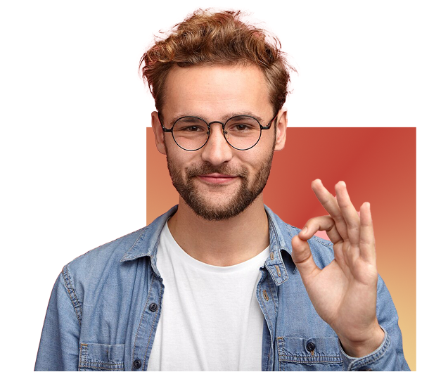

Cinemind
Hosts
Ooit af gevraagd hoe de wereld eruit ziet door de ogen van een psychopaat? Waarom een stalker iemand maar niet alleen kan laten? Je bent niet de enige! Hier bij Cinemind nemen wij populaire media als voorbeeld om jouw een peak behind the curtain te geven van je favoriete personage!
-
Lewis Busby
JeugdpsycholoogHoi! Ik groot filmfanaat. Mijn focus? Hoe films ons iets kunnen leren over de ontwikkeling van kinderen en hoe we omgaan met emoties vanaf jonge leeftijd.
-
Max Maw
Klinisch psycholoogVoor mij zijn films meer dan alleen entertainment, ze zijn een spiegel van de menselijke geest, vol emoties, relaties en levenslessen. Mijn missie? Psychologie begrijpelijk en inspirerend maken, terwijl we samen genieten van de kracht van verhalen.
-

Nicha van Emmerik
CriminoloogVoor mij vertellen films niet alleen over emoties, maar ook over keuzes, macht en morele dilemma’s. Met mijn achtergrond in criminologie en een flinke dosis nieuwsgierigheid ontrafel ik hoe fictie en realiteit met elkaar verweven zijn.